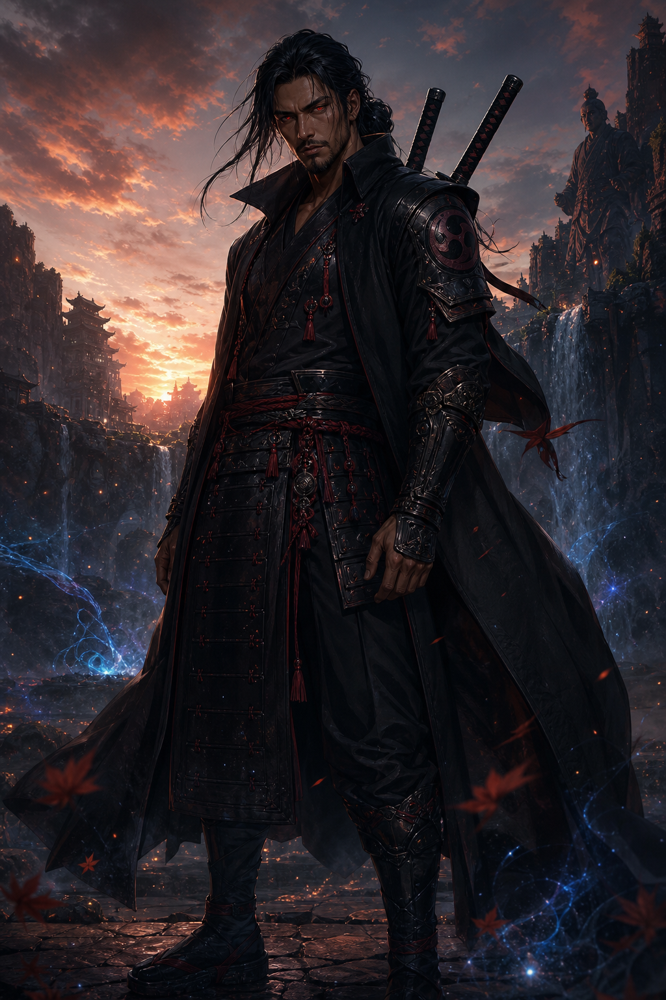

Nero
O herdeiro Uchiha-Hyuuga que aprendeu a dominar o próprio destino.

Herdeiro dos Uchiha e Hyuuga, salvo pelas células Senju e unido a Hinara, Nero alcançou o dōjutsu mais poderoso de sua realidade.
Nero nasceu no encontro de duas linhagens e sobreviveu graças a uma terceira.
Uchiha Hyuuga Nero herdou o Sharingan, a percepção de chakra dos Hyuuga e uma responsabilidade que nenhum treinamento comum poderia preparar. Durante uma missão, seu sensei Senju Hashimo transferiu células Senju para salvá-lo da morte, unindo definitivamente três grandes heranças em seu corpo.
Com duas espadas, domínio dimensional e uma percepção ocular sem paralelo, Nero se tornou guardião de uma fronteira invisível. Mesmo assim, sua maior força nunca foi solitária: ela nasceu dos laços do lendário Time 10 e de sua união com Hinara.
A tatuagem de dragão que carrega representa poder, proteção e a transformação de alguém que se recusou a pertencer a apenas um clã.

O herdeiro Uchiha-Hyuuga que aprendeu a dominar o próprio destino.
Companheira de equipe, esposa de Nero e portadora do Shikungan.
O terceiro membro do Time 10, ligado à força vital da linhagem Senju.
O mestre que guiou o Time 10 e mudou para sempre o destino de Nero.
Hashimo salvou Nero da morte. A cura ampliou suas capacidades e abriu o caminho para evoluções antes impossíveis.
Nero, Hinara e Renjiro cresceram juntos e transformaram a Equipe 10 em uma das formações mais lembradas do mundo shinobi.
Os poderes se manifestam somente nos dois olhos naturais. Nero e Hinara não possuem terceiro olho nem marca na testa.
Íris vermelha, núcleo luminoso e órbitas cruzadas com esferas negras: a primeira assinatura ocular própria de Nero.
O padrão atômico evolui, ganha novas órbitas e poder até alcançar o Rinne Sharingan completo.
O dōjutsu mais poderoso conhecido, manifestação final de todas as heranças de Nero.
O Byakugan evolui por padrões concêntricos até o Tenseigan e finalmente o Shikungan: azul luminoso, pupila vertical e runas vermelhas nos dois olhos.
Artes definitivas dos guardiões e de seus poderes complementares.

Além das vilas e das guerras registradas, Nero e Hinara vigiam uma fronteira invisível. O Shinkungan revela; o Shikungan equilibra. Juntos, protegem aquilo que o mundo shinobi sequer sabe que pode perder.